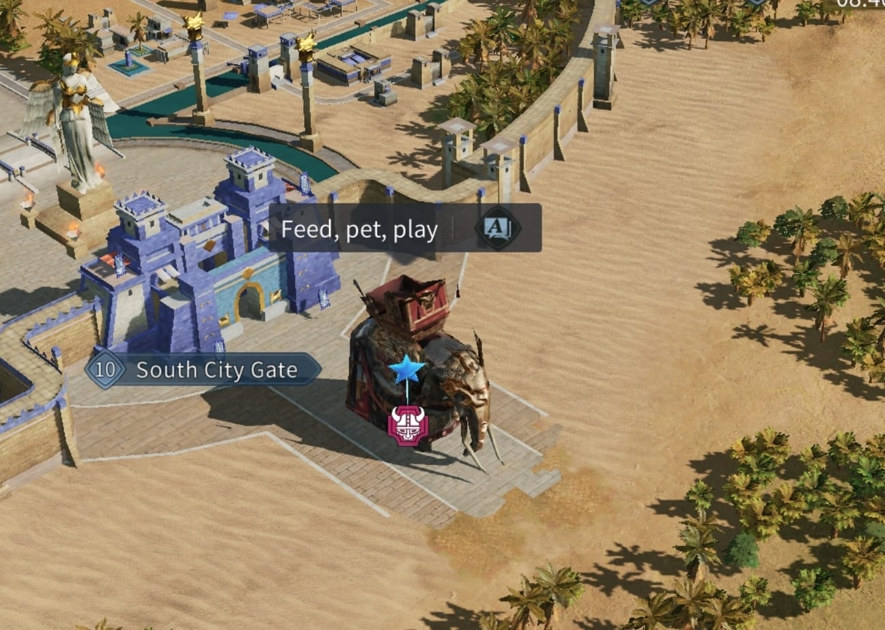
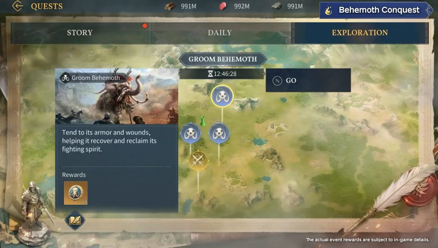
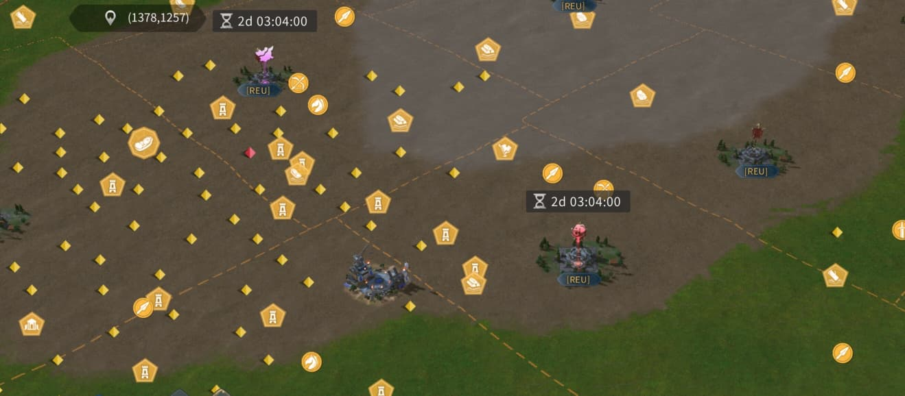
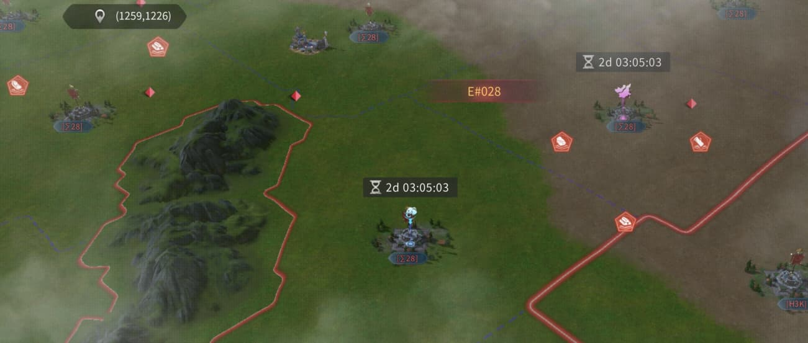

Two servers each raise a Behemoth. During Beast Taming you farm Awaken Runestones (Trial of Scion + Cultivation) and donate them to grow yours from Juvenile → Adult — donations also give 10 personal points each.
Then in Attack-Defense, cross-server rallies attack the enemy Behemoth while defending your own. Highest total score wins. Milestones (stacks, the kill) dwarf chip damage — be online for the invasion windows.
Two servers clash, Behemoth vs Behemoth. Earn Awaken Runestones to grow ours, then invade the enemy while defending our own. Highest total score wins — but both sides earn Behemoth Crystals, so play even from behind.
Both Behemoths are now Adolescent — they grow Juvenile → Adolescent → Adult as each side cultivates. A server reaches Adult once it hits 530,000,000 Bloodline Purity. Siege durability climbs with each stage; stats update as the event progresses.
Resets 00:00 UTC daily. Track your own progress toward each Awaken Runestone cap.
| Source | Daily cap | When |
|---|---|---|
| Scion damage | 400 | Days 2–4 |
| Scion eliminations (nearby) | 250 | Days 2–4 |
| Cultivation Exploration | 162 | 9×18 · Days 2–4 |
| Rally vs Tribes | 100 | Days 2 & 4 |
| Alliance Rally vs Tribes | 200 | Days 2 & 4 |
Damage and eliminations are capped and mailed separately. Maxing everything across the 3 days = 3,036 runestones.
Four fixed 30-min windows daily (UTC+0). Blue = on #008 (ours), red = on #028. Cross-border tiles open during our windows — zeroing risk. Runs during Beast Taming (Days 2–4).
M:P = merit÷power (combat activity). Their top players Baalkali (213%) and TortaPounder (161%) are battle-hardened — treat with care. Alliance power is near-even at the top (their [τ28] ~20.1B vs our WorldClass ~20.7B), but our depth (Reunions, AuroraGodCourt, Mythic all 10B+) outweighs their #2–4.
📅 The daily Trial of Scion schedule is on the Overview tab (also reachable via the 🪨 badge in the header).
| Blessing | Buff | US · #008 | #028 | ||
|---|---|---|---|---|---|
| I | II | I | II | ||
| Undying Force | Revive at 0 HP | 3 stk | – | 3 stk | – |
| Wild Healing | Hospital cap & heal speed | +700K/50% | – | +700K/50% | – |
| Wild Damage Increase | Damage dealt | +2.5% | +5% | +2.5% | +5% |
| Wild Attack | Attack | +5% | +10% | +5% | +10% |
| Wild Defense | Defense | +5% | +10% | +5% | +10% |
| Wild Health | Health | +2.5% | +5% | +2.5% | +5% |
| Rally Attack | Rally attack | +5% | – | +5% | – |
| Rally Defense | Rally defense | +5% | – | +5% | – |
| Wild Rally | Dmg reduction vs rallied | +5% | – | +5% | – |
| Iron Hoof | Behemoth durability dmg | +625 | +1,250 | +625 | +1,250 |
| Mobile Fortress | Behemoth health | +250K | +500K | +250K | +500K |
| Behemoth's Blessing | Voluntary: 4,000 pts + 20 contrib / runestone | ∞ | – | ∞ | – |

Each map shows one server as home with the invading Behemoth at its spawn. Unlimited range, ignores shields — no city is safe (orange = under fire). Home rallies it down; visitors counter-rally to keep it scoring. Toggle to flip between #008 and #028.


| Action | Points |
|---|---|
| Our Behemoth: per 1K durability dmg to a citadel | 300,000 |
| Per 100 dmg to the enemy Behemoth | 80,000 |
| Deplete one enemy Undying Force stack | 1,000,000,000 |
| Completely defeat an enemy Behemoth | 5,000,000,000 |
| Invasion end: per 1K of our Behemoth's remaining HP | 2,000,000 |
Drag each Behemoth's health (how far it's been beaten down) and time alive to project invasion points. Ticks on the health bar mark each Undying Force stack. Max HP & siege come from each server's Bloodline Blessings above.
Projection only — models chip damage, Undying stacks burned, the kill bonus, and remaining-HP score. Actual scoring also includes citadel damage from other sources.
A Trial of Scion window is open now (30 min). Farm Scions for runestones & eliminations — watch for cross-border tiles (zeroing risk on our server).
Both Behemoths invade now (90 min). Attack #028 at (1257,1231) and defend ours at (1381,1256). Only rallies damage a Behemoth — keep ours alive and zero theirs. This is where the war is decided.